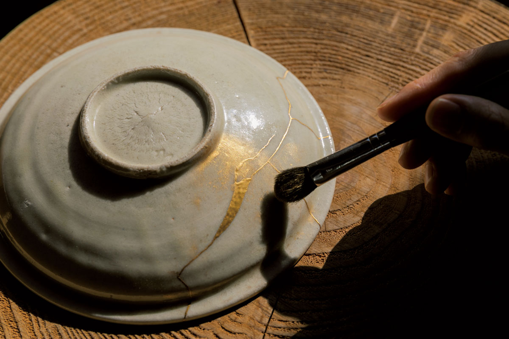
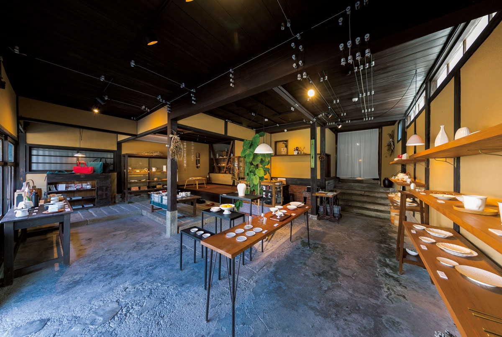
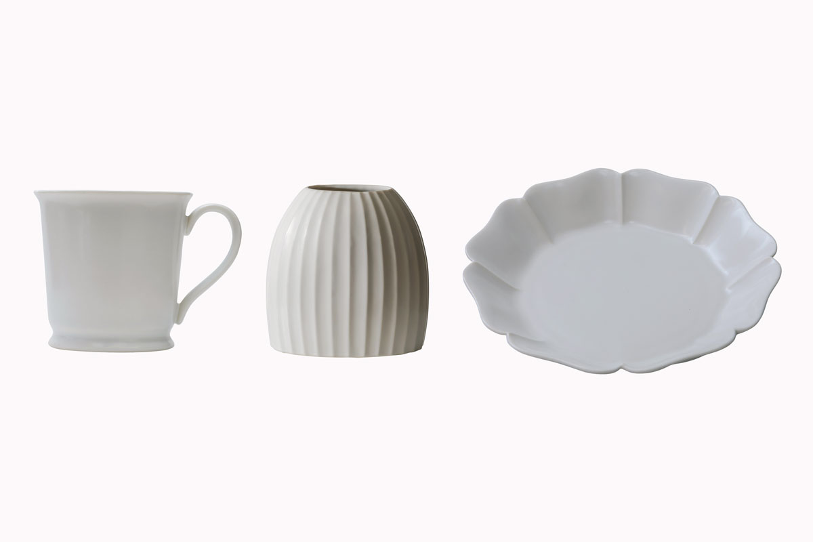
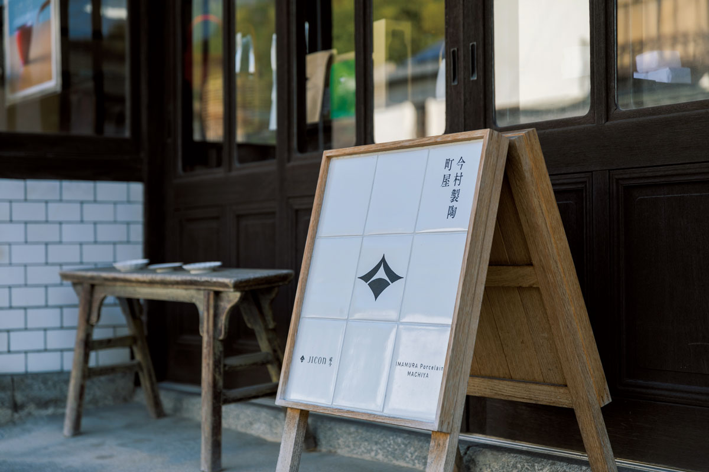
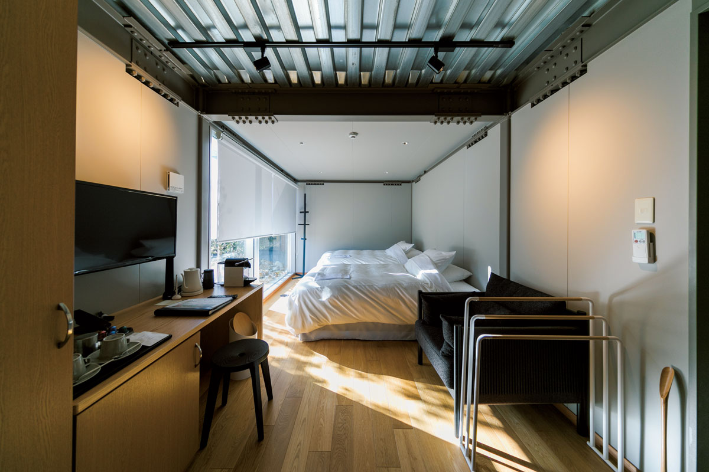
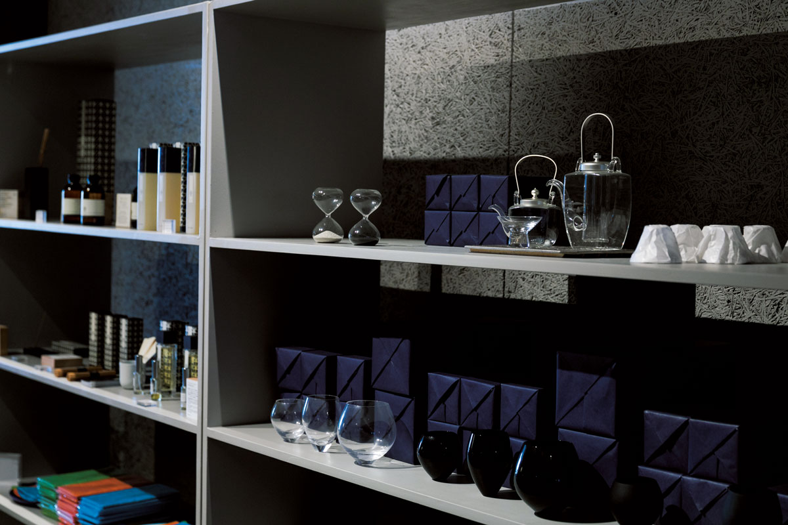
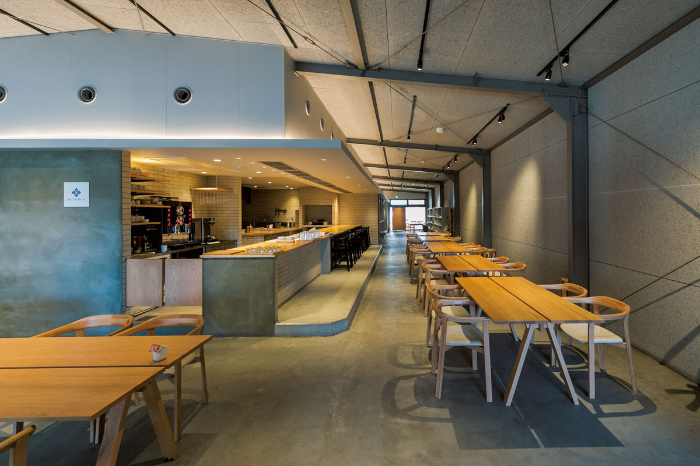
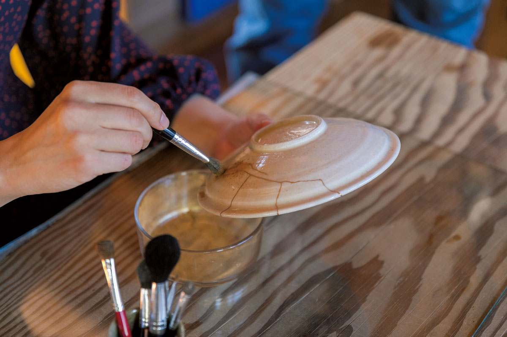
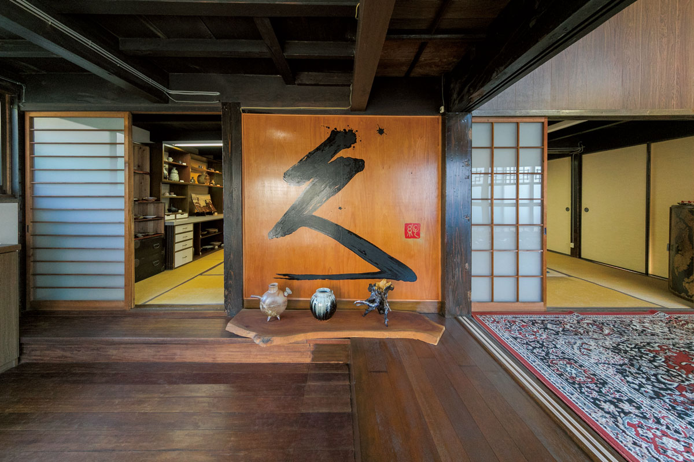

Префектура Сага · Арита · фарфор
Арита для любителей посуды: каменоломня, фарфоровая лавка, обержи и мастерская кинцуги

Фарфор Арита знают во всём мире, а сам городок в префектуре Сага легко обойти за день. Здесь можно увидеть, откуда брали камень для первого японского фарфора, выбрать посуду, переночевать среди неё и починить разбитую чашу золотом.
История
Камень, с которого всё началось
Фарфор Арита узнают по белой гладкой поверхности. Бывает чисто белый фарфор, селадон под зеленоватой глазурью и посуда с синей подглазурной росписью кобальтом, а яркую цветную роспись в стиле Какиэмон и других стилях ценят уже несколько веков.
История началась в начале XVII века. Корейский гончар Ли Сампхён нашёл на горе Идзумияма в Арите фарфоровый камень и сделал из него первый в Японии фарфор.
Каменоломню Идзумияма бережно охраняют. Огромная выемка в горе, оставшаяся после столетий добычи, производит сильное впечатление. По самому городку тоже видно, что здесь живут фарфором: старые улицы входят в охраняемый государством квартал исторической застройки, а между домами торчат кирпичные трубы гончарных мастерских.
Купить
«Имамура Сэйто Матия»: посуда JICON

Посуду марки JICON узнают по строгим формам и тёплому, чуть сливочному оттенку белого. Марку создал Хадзимэ Имамура, второй сын 13-го главы гончарной мастерской «Тоэцу», которой около 350 лет. Для работы над формами он пригласил дизайнера посуды и предметов для дома.
В фирменной лавке собрана вся линейка JICON. Кроме неё здесь продают посуду, которую выбрал сам Хадзимэ Имамура, и бытовые вещи, придуманные тем же дизайнером.


«Имамура Сэйто Матия»
- Адрес
- префектура Сага, уезд Нисимацура, Арита, Иваягавати, 2-4-13
- Телефон
- +81 955-43-4363
- Часы работы
- 11:00–17:00
- Выходные
- вторник и нерегулярные дни
- Сайт
- jicon.jp
Ночлег
arita huis: обержи с фарфором на столе
arita huis открылся в 2018 году как обержи, то есть гостиница при ресторане. Интерьеры курировал дизайнер, работавший над проектом 2016/arita. В доме 11 номеров, а в ресторане готовят современную французскую кухню из продуктов Саги и соседних мест и подают её на фарфоре Арита. В 2019 году ночь с завтраком стоила от 10 000 иен.



arita huis
- Адрес
- префектура Сага, уезд Нисимацура, Арита, Акасака-хэй, 2351-169, в комплексе «Аритасэра»
- Телефон
- +81 955-25-8018 (приём звонков 9:00–22:00)
- Часы работы
- обед 11:30–15:00 (последний заказ 14:30), ужин 18:00–22:00 (последний заказ по меню 21:00)
- Выходные
- без выходных
- Номера
- от 10 000 иен за ночь с завтраком
- Сайт
- aritahuis.com
Попробовать
IORIHISASHI: кинцуги в доме 1900 года

В Арите заняться кинцуги, починкой посуды золотом, можно только здесь. Мастерскую ведёт Ёсихиса Цурута, мастер керамики Карацу, и под его руководством пробуют кинцуги и роспись лаком макиэ. Для склейки берут эпоксидную смолу, которую легко купить.
В 2019 году был трёхчасовой урок за 9000 иен: на заранее приготовленной посуде показывают все этапы. Был и двухдневный курс, на который приносят свою любимую разбитую посуду. Записываться на оба нужно через сайт.

IORIHISASHI
- Адрес
- префектура Сага, уезд Нисимацура, Арита, Идзумияма, 1-28-23
- Телефон
- +81 955-43-2764
- Часы работы
- только по предварительной записи
- Выходные
- нерегулярные
- Цены / Вход
- урок кинцуги на 3 часа 9000 иен (2019)
- Сайт
- hisasih.com
Фото: Кога Оцука.